Bildung im Museum
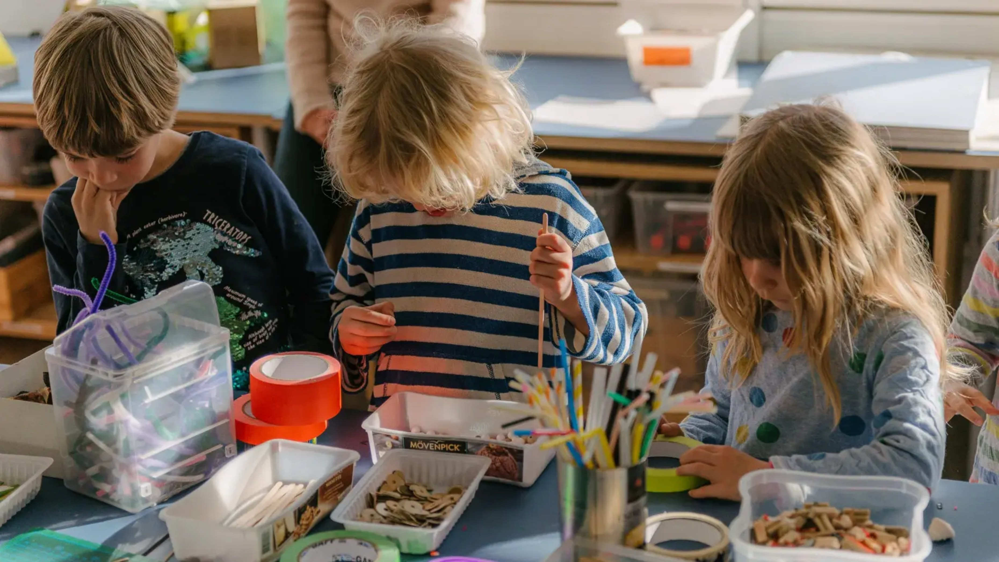
Kunst aus Berlin
für alle!
Kunst erleben und mehr erfahren, sich austauschen, Fragen stellen, selbst kreativ werden und vor allem: Spaß haben! In unserem Bildungsprogramm wollen wir gemeinsam mit Ihnen die Ausstellungen in der Berlinischen Galerie entdecken. Berliner*innen und Gäste, Erwachsene und Jugendliche, Kinder und Familien, Kita-Gruppen und Schulklassen sowie Menschen mit Behinderungen – jede*r findet bei uns ein Angebot. Moderne und zeitgenössische Kunst aus Berlin – für alle!
Unser Bildungsprogramm unterstützen zwei kompetente Partner: Jugend im Museum e.V. und Museumsdienst Berlin.
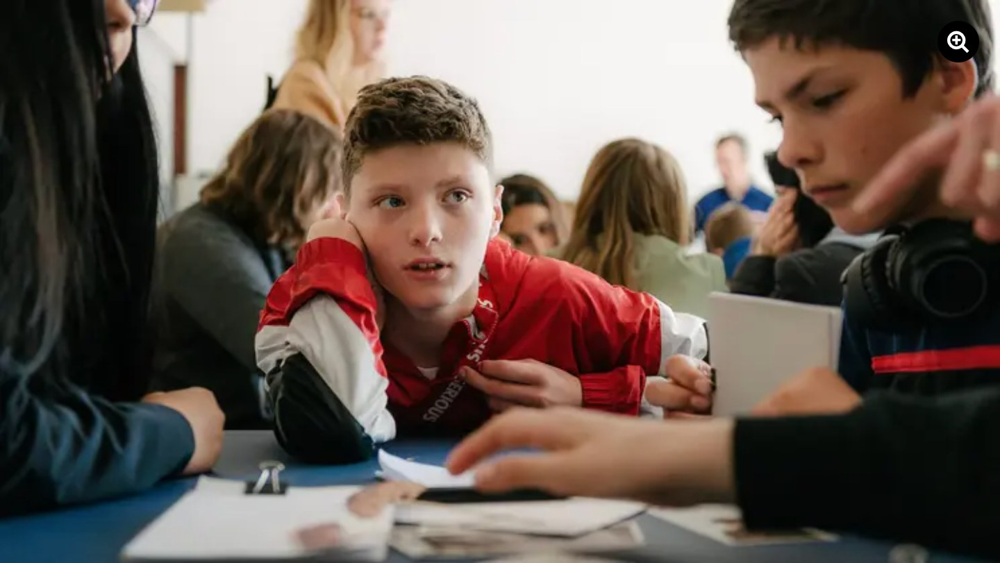
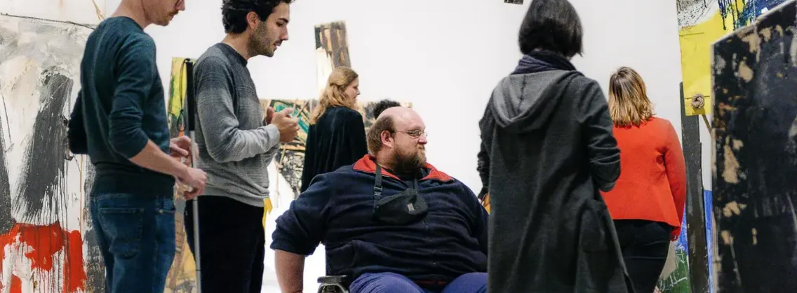
Angebote vor Ort
Nächste Termine
10
15 Uhr
Führung
Wochenendführung: Lovis Corinth
In 60 Minuten geben wir Einblicke in die Sonderausstellung
16:15 Uhr
Führung
Wochenendführung: Lovis Corinth
In 60 Minuten geben wir Einblicke in die Sonderausstellung
Outreach
Unsere Kooperationsprojekte mit Schulen, Vereinen und Gruppen aus der Nachbarschaft
Wir wollen Menschen, die unser Museum noch nicht kennen, für die Berlinische Galerie begeistern und uns für neue Besucher*innengruppen öffnen. Darum entwickeln wir gemeinsam mit Vereinen und Initiativen aus unserer Nachbarschaft langfristige Kunst- und Bildungsprojekte, arbeiten regelmäßig mit Berliner Schulen zusammen und erproben innovative Vermittlungsformate. Im Mittelpunkt steht dabei immer die Begegnung – mit der Kunst und mit anderen Sichtweisen. Unser Museum soll ein Ort der Kommunikation für alle sein. Unser Ziel: die Bildungsarbeit und das Museum kooperativ und partizipativ gestalten.
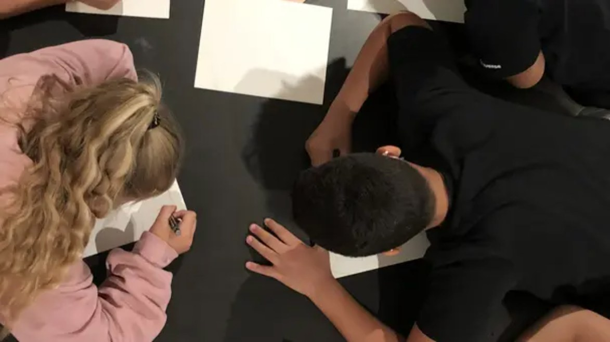
Museum im Sucher
Vier Berliner Schulklassen nehmen das Museum seit Mitte 2018 genau unter die Lupe.
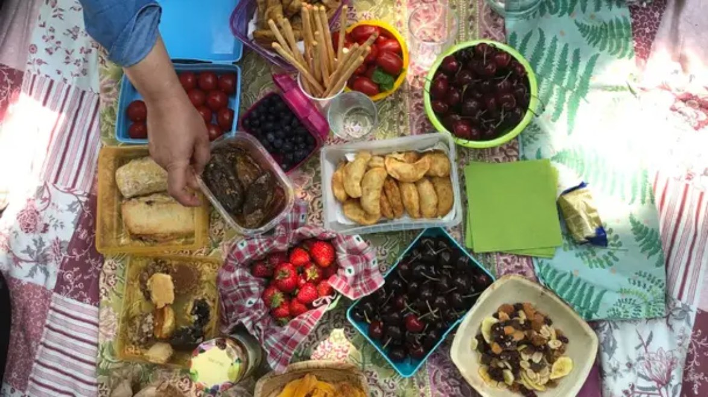
Standortwechsel
Ein*e Künstler*in oder ein Kollektiv, die schon länger engagiert mit Gruppen Kunst machen, residieren einmal wöchentlich im Museum.
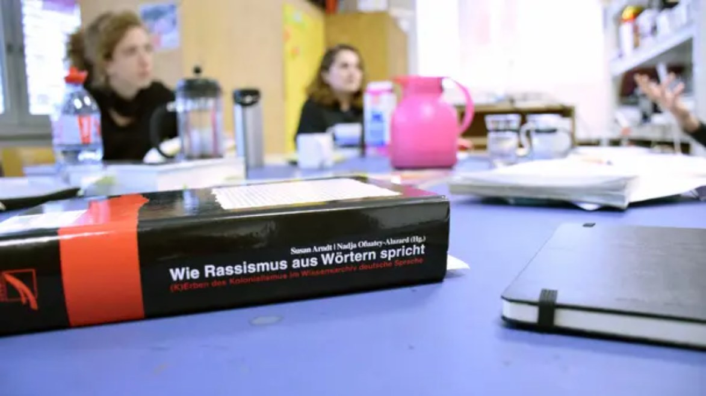
Reflexionstreffen
Das Team setzt sich kritisch mit gesellschaftlich relevanten Themen auseinander
Atelier Bunter Jakob
Im Atelier Bunter Jakob ist (fast) alles möglich. Hier können Kinder und Jugendliche ihrer Kreativität freien Lauf lassen und eigene Ideen umsetzen: Farben, Techniken und Materialien ausprobieren, fotografieren, malen, drucken, einen Trickfilm drehen oder Skulpturen bauen – im Mittelpunkt stehen immer das Experiment und der Spaß an der Kunst!
Die Programme im Atelier Bunter Jakob werden von Jugend im Museum e.V. für die Berlinische Galerie entwickelt und durchgeführt.
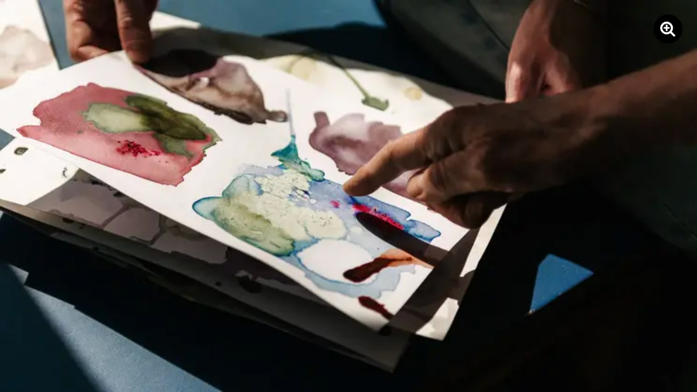
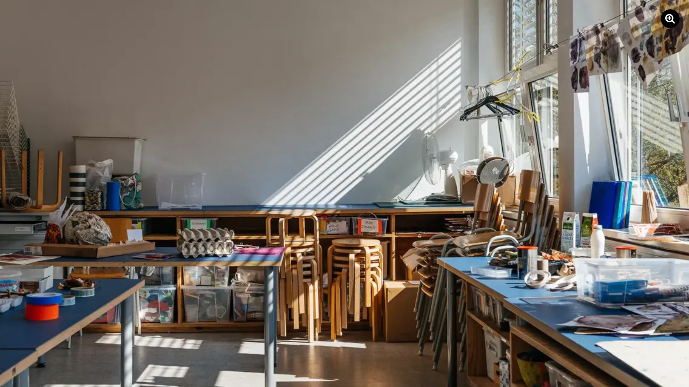
207 m²
Raum für Aktion und Kooperation
In der Berlinischen Galerie gibt es im Ausstellungsbereich einen Raum speziell für Kulturelle Bildung. Auf über 200 m² ist Platz für Workshops, Kooperationsprojekte und künstlerisches Arbeiten.
Es finden regelmäßig Programme mit Kindern, Familien, Schulklassen und Gruppen aus der Nachbarschaft statt. In Ausstellungen und über eine Projektionsfläche werden Ergebnisse aus den Projekten sichtbar. Eine raumfüllende Sitzplattform lädt alle Besucher*innen zum Austausch und Verweilen ein. Damit öffnet sich das Museum weiter für seine Besucher*innen und schafft langfristig einen Ort für kritische Debatten und künstlerische Prozesse.
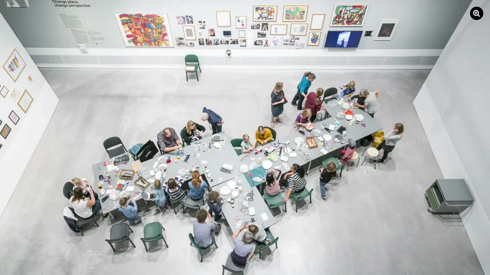
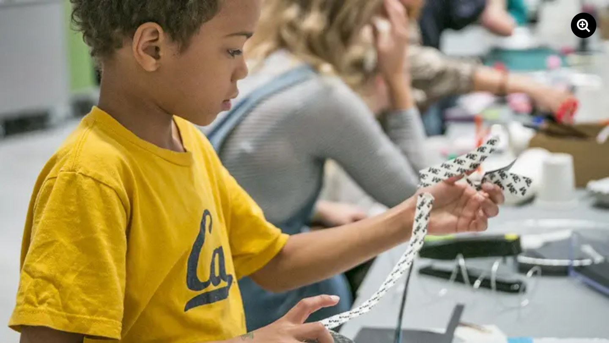
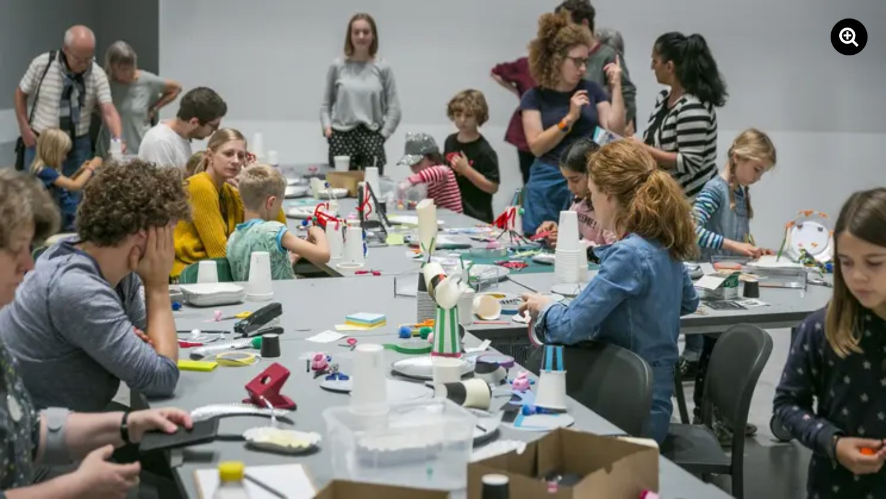